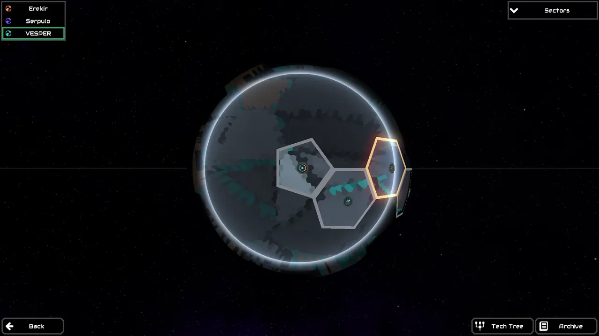
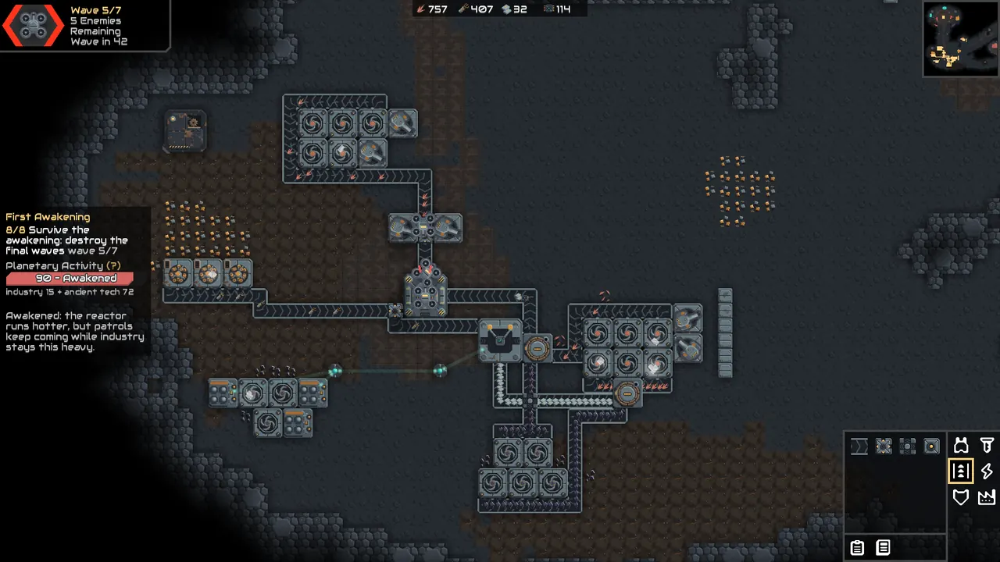
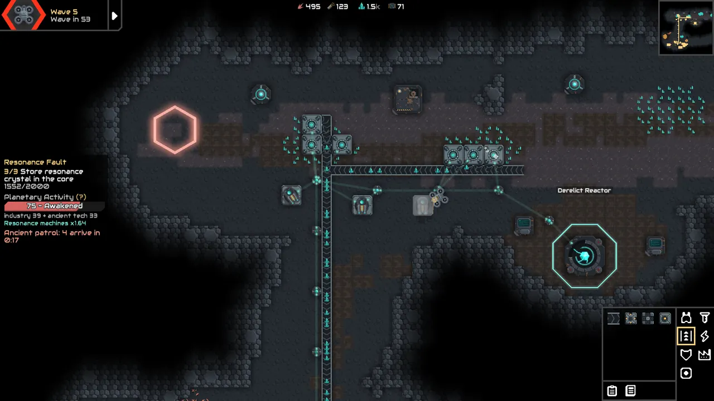
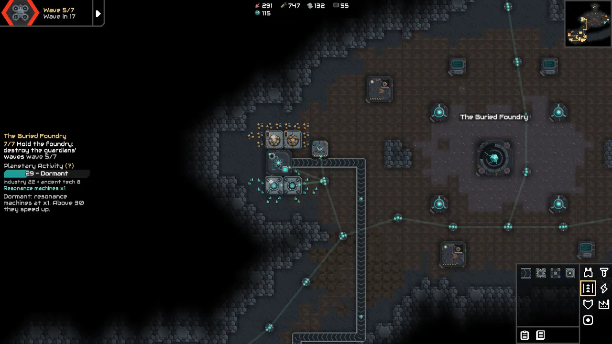
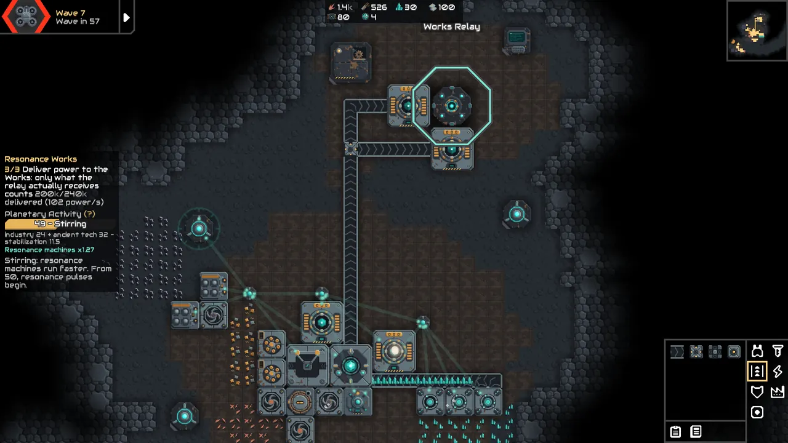
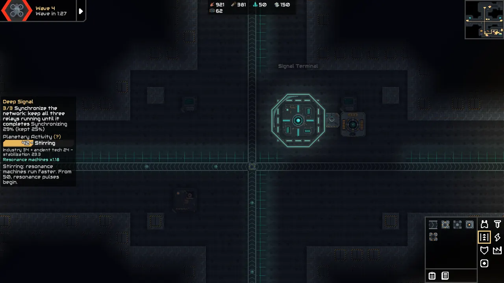
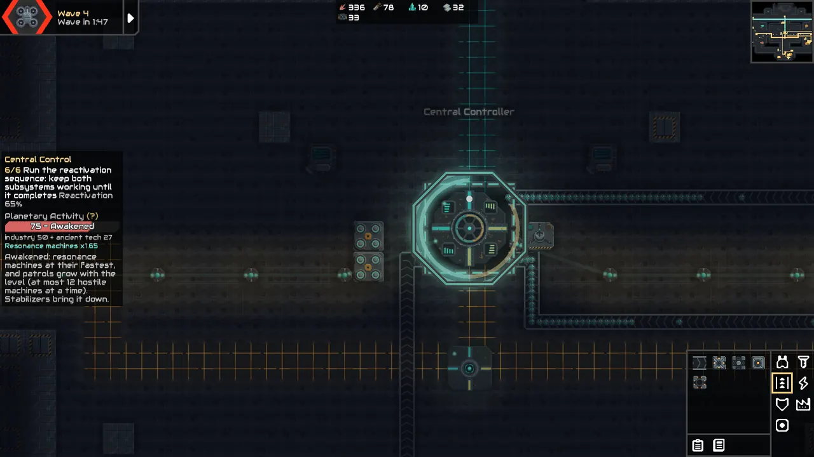

VESPER adds its own planet, tech tree, industry and ancient machinery to Mindustry, and a planetary response that reacts to the factory you build. It is a public alpha, on version 0.8.1. Five campaign sectors are playable. Chapter One is complete. Chapter Two has begun and is not complete.
The campaign
| Sector | What you do there |
|---|---|
| First Awakening | Build a foothold in a dead valley and reignite a derelict reactor. The basin answers. |
| Resonance Fault | Mine a fault of resonance crystal, and decide how hard to push the planet to get it. |
| The Buried Foundry | Survey an excavated foundry, then restore its machines or strip them for parts. |
| Deep Signal | Keep three relays of an underground network running through a synchronization. |
| Central Control | Split your power grid between two ancient protocols and reactivate the complex. |
There is also Resonance Works, a separate scenario about power, containment and risk, under Play > Custom Game.
What makes it different
The planet reacts. Your industry raises the planet's activity. Past certain levels, resonance machines run faster, announced pulses disrupt nearby production, and ancient machines climb out of the vents. You can stabilize the basin, shield what matters, or push harder and pay for it in defense.
Industrial archaeology. Old installations are everywhere. Survey them, then decide what each is worth: a working machine, or salvage. Recovered records slowly reveal what these facilities were doing.
Resonance industry. Extract crystal, press resonance cores and burn them in dynamos that follow your power demand. Containment fields hold the pulses back, for a price.
Screenshots
All of these come from the real game client.







How to install
Steam: subscribe on the Workshop, start Mindustry from Steam, open Play > Campaign and select the VESPER planet.
GitHub: download Vesper.jar from the latest release, open Mods in Mindustry, import the file and restart the game.
Keep only one copy installed. Mindustry loads a single mod with a given name.
Questions
Which version of Mindustry does it need?
v160.7.
Is it free?
Yes. VESPER is free and open source, under the GPL-3.0 license.
Is it finished?
No. The story stops partway through Chapter Two, and there is no custom music or sound yet. Balance comes from long automated playthroughs, with almost no human testing so far, so feedback helps a lot.
Does it work in multiplayer?
It was checked in automated client and server sessions. Everyone needs the same version.
Does it run on Android?
The release is packaged for it, but it has not been run on a device yet.
Found a bug?
Open an issue saying which sector you were in, what you expected and what happened. A screenshot or save file helps.
Em português
VESPER é um mod de campanha para Mindustry, ambientado em um planeta-máquina abandonado que reage à expansão da sua indústria. A alpha pública traz cinco setores, indústria de ressonância, arqueologia industrial e o cenário avulso Resonance Works, com tradução para português do Brasil. O Capítulo Um está completo. O Capítulo Dois começou e ainda não terminou.
Para jogar, inscreva-se na Steam Workshop, abra o Mindustry pela Steam e vá em Jogar > Campanha, planeta VESPER.